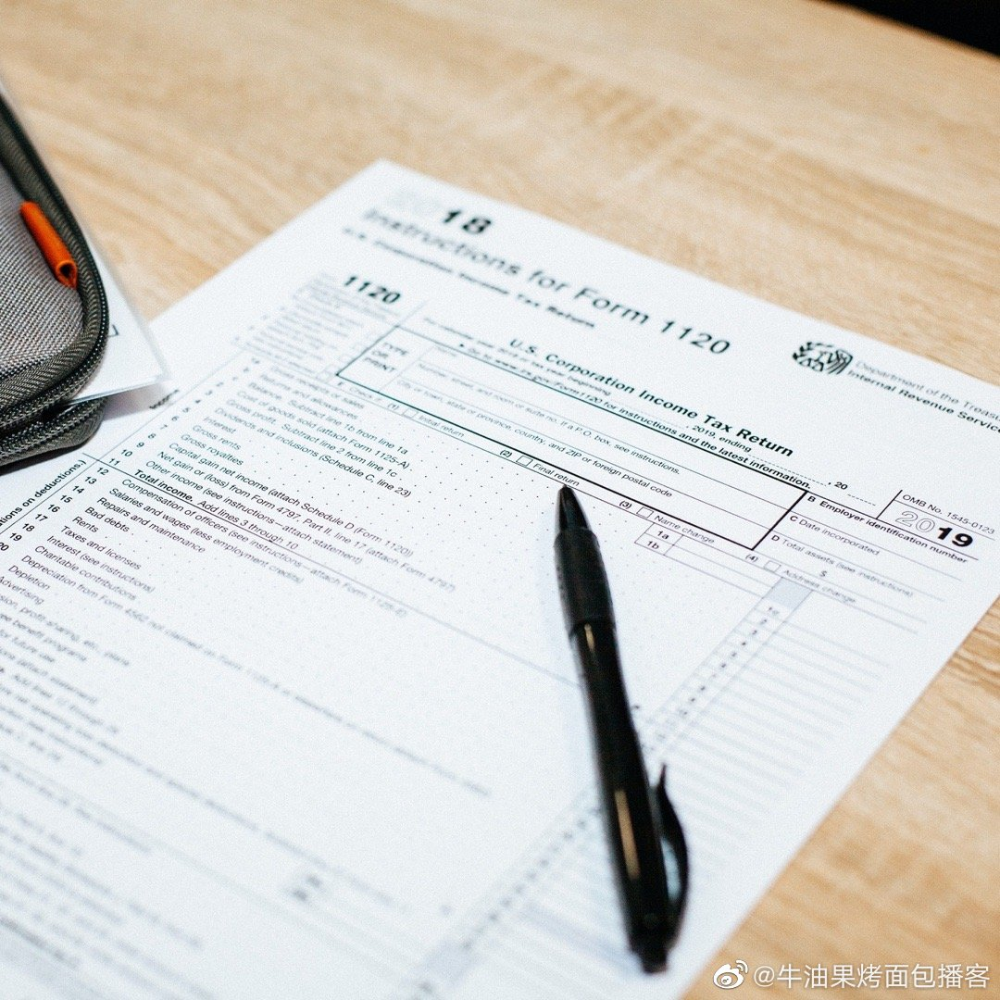

意大利挺住！ //@意大利球迷俱乐部:现在回顾起来依然热血沸腾@LegaSerieA:最伟大的一段意语解说（Fabio Caressa e Beppe Bergomi）中字翻译版2006年#世界杯# 半决赛 德国0-2意大利 加时赛最后3分钟Andiamo a Berlino Beppe!!!#经典回顾# @PP体育 PP意甲的微博视频 4万次播放 02:44
在国内生活的人，如果对美国复杂个税系统很好奇，可以听一听我们闲扯美国的个税。@牛油果烤面包播客:爱因斯坦说，宇宙中最复杂的东西是美国的税法。美国的一个普通个人，都会被收哪些税呢？联邦和报税软件公司的猫鼠游戏又是怎么回事呢？有人说在美国结婚会被收一笔幸福税又是怎么回事呢？在这一期节目里，我们请到了税务专家 Lillian 和大家聊聊美国个税。 网页链接 